Spring MVC
Spring Projects
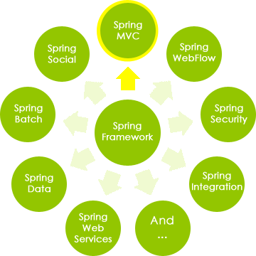What is spring mvc?
Spring MVC is the web component of Spring's framework
- Model - Encapsulates the application data and in general they will consist of POJO
- View - responsible for rendering the model data and generates output in HTML
- Controller - Processing user requests and building appropriate model and passes it to the view for rendering
Spring MVC Components
DispatcherServlet
Handles all the HTTP requests and responses
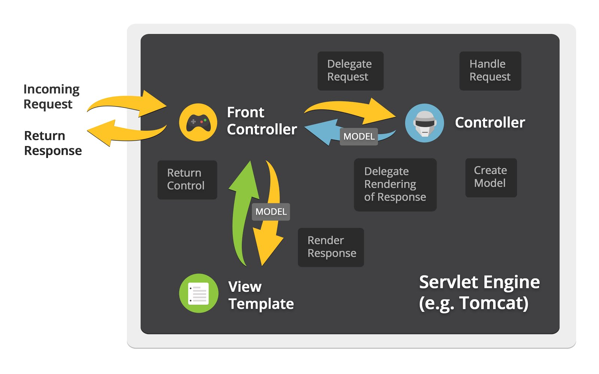DispatcherServlet Workflow Details
- After receiving an HTTP request, DispatcherServlet consults the HandlerMapping to call the appropriate Controller
- The Controller takes the request and calls the appropriate service methods based on used GET or POST method. The service method will set model data based on defined business logic and returns view name to the DispatcherServlet
- The DispatcherServlet will take help from ViewResolver to pickup the defined view for the request
- Once view is finalized, The DispatcherServlet passes the model data to the view which is finally rendered on the browser
Spring Configuration
DispatcherServlet Configuration
Using a URL mapping in the web.xml file
example
org.springframework.web.servlet.DispatcherServlet
1
example
/example/*
Spring MVC looks for a file named [servlet-name]-servlet.xml in the WEB-INF directory
Use another name
contextConfigLocation
/WEB-INF/root-context.xml
org.springframework.web.context.ContextLoaderListener
dispatcher
org.springframework.web.servlet.DispatcherServlet
contextConfigLocation
1
dispatcher
/*
***Spring used default configuration in <servlet-name>-servlet.xml if has same config in any file.
Spring Configuration
For the previous example we would need to create a file in /WEB-INF named example-servlet.xml
<beans>
<mvc:annotation-driven/>
<context:component-scan base-package="th.co.augmentis" />
<bean class="org.springframework.web.servlet.view.InternalResourceViewResolver">
<property name="prefix" value="/WEB-INF/jsp/" />
<property name="suffix" value=".jsp" />
</bean>
</beans>
Spring Configuration(cont.)
- <mvc:annotation-driven/> tells Spring to support annotations like @Controller, @RequestMapping and others
- <context:component-scan/> use to activate Spring MVC annotation scanning annotations like @Controller and @RequestMapping etc.
- InternalResourceViewResolver looks for JSPs that match a given view name in the director /WEB-INF/jsp
Spring MVC Resource
Used to configuataion static resources
<mvc:resources mapping="/resources/**" location="/" />
Spring Property
Used for externalizing properties from the Spring bean
<property name="location" value="classpath:/jdbc.properties"/>
jdbc.properties
jdbc.mysql.driverClassName= com.mysql.jdbc.Driver
jdbc.mysql.dialect=org.hibernate.dialect.MySQLDialect
jdbc.mysql.databaseurl=jdbc:mysql://localhost:3306/hellospring
jdbc.mysql.username=root
jdbc.mysql.password=root
Spring DataSource
Configuring the plain old JDBC DriverManager via bean properties
<property name="driverClassName" value="${jdbc.mysql.driverClassName}"/>
<property name="url" value="${jdbc.mysql.databaseurl}"/>
<property name="username" value="${jdbc.mysql.username}"/>
<property name="password" value="${jdbc.mysql.password}"/>
SessionFactory
Create sessions to interact with the database
<property name="packagesToScan" value="th.co.augmentis.entity"/>
<property name="dataSource" ref="dataSource"/>
${jdbc.mysql.dialect}
true
false
false
update
Transaction Manager
Manage all the transactional
<tx:annotation-driven />
<bean id="transactionManager" class="org.springframework.orm.hibernate4.HibernateTransactionManager">
<property name="sessionFactory" ref="sessionFactory" />
</bean>
<tx:annotation-driven/> element defines that we are declaring transactions using annotations
Spring MVC Annotations
@Controller
Defines the class as a Spring MVC controller
@Controller
public class HelloWorldController {
public String helloWorld(Model model) {
model.addAttribute("message", "Hello World!");
return "helloWorld";
}
}
@RequestMapping
Define URL mapping for a class and/or method
@Controller
public class HelloWorldController {
@RequestMapping(value = "/helloWorld", method = {RequestMethod.POST})
public String helloWorld(Model model) {
model.addAttribute("message", "Hello World!");
return "helloWorld";
}
}
- value - indicates the URL to which the handler method
- mothod - list of supported HTTP method (GET, POST)
@RequestMapping(cont.)
The request Content-Type will be matched only the specified media type
@Controller
@RequestMapping(value = "/pets", method = RequestMethod.POST, consumes="application/json")
public void addPet(@RequestBody Pet pet, Model model) {
// implementation omitted
}
@RequestMapping(cont.)
The request will be matched only if the Accept request header matches one of these values
@Controller
@RequestMapping(value = "/pets/{petId}", method = RequestMethod.GET, produces="application/json")
@ResponseBody
public Pet getPet(@PathVariable String petId, Model model) {
// implementation omitted
}
@RequestMapping(cont.)
Request Parameters Values - required parameters
@Controller
@RequestMapping("/owners/{ownerId}")
public class RelativePathUriTemplateController {
@RequestMapping(value = "/pets/{petId}", method = RequestMethod.GET, params="myParam=myValue")
public void findPet(@PathVariable String ownerId, @PathVariable String petId, Model model) {
// implementation omitted
}
}
@RequestMapping(cont.)
Request Header Values - required headers
@Controller
@RequestMapping("/owners/{ownerId}")
public class RelativePathUriTemplateController {
@RequestMapping(value = "/pets", method = RequestMethod.GET, headers="myHeader=myValue")
public void findPet(@PathVariable String ownerId, @PathVariable String petId, Model model) {
// implementation omitted
}
}
@RequestMapping(cont.)
Arguments and return types
@Controller
public class SomeController {
@RequestMapping
public String someMethod(Model model) {
// implementation omitted
return "returnValue"
}
}
- String - Return value
- someMethod - Arguments
Allowed arguments
- HttpServletRequest, HttpServletResponse, HttpSession
- WebRequest, NativeWebRequest
- java.util.Locale
- java.io.InputStream, java.io.Reader
- java.io.OutputStream, java.io.Writer
- java.security.Principle
- HttpEntity
- java.util.Map, Model, ModelMap
- Errors, BindingResult
- etc.
Allowed return types
- ModelAndView, Model, java.util.Map, View
- String
- Represents a view name, if not specified otherwise.
- void
- HttpEntity, ResponseEntity
- etc.
@PathVarible
In Spring MVC use the @PathVariable annotation on a method argument to bind it to the value of a URI template variable
@RequestMapping(value="/owners/{ownerId}", method=RequestMethod.GET)
public String findOwner(@PathVariable String ownerId, Model model) {
// implementation omitted
}
or
@RequestMapping(value="/owners/{ownerId}", method=RequestMethod.GET)
public String findOwner(@PathVariable("ownerId") String theOwner, Model model) {
// implementation omitted
}
@PathVarible(cont)
A method can have any number of @PathVariable annotations
@RequestMapping(value="/owners/{ownerId}/pets/{petId}", method=RequestMethod.GET)
public String findPet(@PathVariable String ownerId, @PathVariable String petId, Model model) {
// implementation omitted
}
eg.
http://www.example.com/owners/42/pets/21
@RequestParam
Use the @RequestParam annotation to bind request parameters to a method parameter in controller
@Controller
@RequestMapping("/pets")
@SessionAttributes("pet")
public class EditPetForm {
@RequestMapping(method = RequestMethod.GET)
public String setupForm(@RequestParam("petId") int petId, ModelMap model) {
Pet pet = this.clinic.loadPet(petId);
model.addAttribute("pet", pet);
return "petForm";
}
}
***Parameters using this annotation are required by default
e.g., @RequestParam(value="id", required=false)
@RequestBody
Indicates that a method parameter should be bound to the value of the HTTP request body
@RequestMapping(value = "/something", method = RequestMethod.PUT)
public void handle(@RequestBody String body, Writer writer) throws IOException {
writer.write(body);
}
@ResponceBody
Indicates that the return type should be written straight to the HTTP response body
@RequestMapping(value = "/something", method = RequestMethod.PUT)
@ResponseBody
public String helloWorld() {
return "Hello World";
}
Questions?
JSTL & JSP EL
JSP Standard Tag Library(JSTL)
A collection of useful JSP tags
- Core Tags - most frequently used JSTL tags
- Formatting tags - format and display text, the date, the time, and numbers
- SQL tags - interacting with relational databases (RDBMSs)
- XML tags - custom tags for interacting with XML data
- JSTL Functions - standard functions, most of which are common string manipulation functions
How to use JSTL
Download from link http://tomcat.apache.org/taglibs/standard/
Copy the JAR files in the distribution's 'lib' directory to your application's webapps\ROOT\WEB-INF\lib directory.
or Add Maven Dependency
javax.servlet
jstl
1.2
Using JSTL tags from a JSP
Core Tags Library
<%@ taglib prefix="c" uri="http://java.sun.com/jsp/jstl/core" %>
XML tags Library
<%@ taglib prefix="x" uri="http://java.sun.com/jsp/jstl/xml" %>
Formatting tags Library
<%@ taglib prefix="fmt" uri="http://java.sun.com/jsp/jstl/fmt" %>
SQL tags Library
<%@ taglib prefix="sql" uri="http://java.sun.com/jsp/jstl/sql" %>
JSTL Functions Library
<%@ taglib prefix="fn" uri="http://java.sun.com/jsp/jstl/functions" %>
JSP Expression Language (EL)
Expression Language makes it possible to easily access application data stored in JavaBeans components
- Allows you to create expressions both arithmetic and logical
- Can use integers, floating numbers, strings, boolean values, and null.
JSP Expression Language (cont.)
- ${name} for a simple variable
- ${name.foo.bar} for a nested property
- Arithmetic
Accessing bean using simple syntax
Kinds of expressions
<jsp:setProperty name="box" value=“${2*box.width+2*box.height}"/>
- Logical
<c:if test="${bean1.a < 3}" > ... </c:if>
Operators in EL
| Operator | Description |
|---|---|
| . | Access a bean property or Map entry |
| [] | Access an array or List element |
| ( ) | Group a subexpression to change the evaluation order |
| + | Addition |
| - | Subtraction or negation of a value |
| * | Multiplication |
| / or div | Division |
| % or mod | Modulo (remainder) |
Operators in EL(cont.)
| Operator | Description |
|---|---|
| == or eq | Test for equality |
| != or ne | Test for inequality |
| < or lt | Test for less than |
| > or gt | Test for greater than |
| <= or le | Test for less than or equal |
| >= or ge | Test for greater than or equal |
| && or and | Test for logical AND |
| || or or | Test for logical OR |
| ! or not | Unary Boolean complement |
| empty | Test for empty variable values |
Functions in JSP EL
JSP EL allows you to use functions in expressions as well.These functions must be defined in custom tag libraries.
A function usage has the following syntax:
${ns:func(param1, param2, ...)}
ns is the namespace of the function, func is the name of the function, param1 is the first parameter value
eg.
${fn:length("Get my length")}
Implicit Objects
Implicit Objects are the Java objects that the Container makes available to used directly without being explicitly declared.
JSP Implicit Objects are also called pre-defined variables
Implicit Objects
The JSP expression language supports the following implicit objects
| Implicit object | Description |
|---|---|
| pageScope | Scoped variables from page scope |
| requestScope | Scoped variables from request scope |
| sessionScope | Scoped variables from session scope |
| applicationScope | Scoped variables from application scope |
| param | Request parameters as strings |
| paramValues | Request parameters as collections of strings |
Implicit Objects(cont.)
| Implicit object | Description |
|---|---|
| header | HTTP request headers as strings |
| headerValues | HTTP request headers as collections of strings |
| initParam | Context-initialization parameters |
| cookie | Cookie values |
| pageContext | The JSP PageContext object for the current page |
Scope in JSP
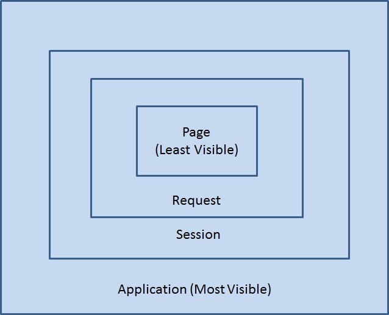
Scope in JSP(cont.)
| Scope | Description |
|---|---|
| Page Scope | If a bean is declared with Page scope, It cannot be referenced by any other JSP or servlet, even if a forward or include is used. |
| Request Scope | If a bean is declared with Request scope, The reference remains alive in any other servlet or JSP that is called by jsp:include and jsp:forward. |
Scope in JSP(cont.)
| Scope | Description |
|---|---|
| Session Scope | If a bean is declared with Session scope, it is available to all the JSP & Servlets that are accessed by a single user. |
| Application Scope | Application scope is the widest or most visible scope. A bean declared with application scope is visible to just about any servlet or JSP in the whole applications context, across user sessions. |
Questions?
Spring Hello World
Create web application with Maven
mvn archetype:generate
-DarchetypeGroupId=org.apache.maven.archetypes
-DarchetypeArtifactId=maven-archetype-webapp
-DgroupId=com.aug -DartifactId=hellospring
Or clone hellospring from github
https://github.com/grandek/hellospring.git
<dependency>
<groupId>org.springframework </groupId>
<artifactId>spring-web</artifactId>
<version>4.1.1.RELEASE</version>
</dependency>
<dependency>
<groupId>org.springframework</groupId>
<artifactId>spring-webmvc</artifactId>
<version>4.1.1.RELEASE</version>
</dependency>
Modify web.xml
Using a URL mapping in the web.xml file
hellospring
org.springframework.web.servlet.DispatcherServlet
1
hellospring
/
Create hellospring-servlet.xml
<beans>
<mvc:annotation-driven/>
<context:component-scan base-package="com.aug.*" />
<bean class="org.springframework.web.servlet.view.InternalResourceViewResolver">
<property name="prefix" value="/WEB-INF/pages/" />
<property name="suffix" value=".jsp" />
</bean>
</beans>
Create HelloController
- create package "com.aug.controller"
- create HelloController.java
@Controller
public class HelloController implements Serializable {
@RequestMapping( value = "/hello", method= { RequestMethod.GET })
public String hellopage(){
return "sample";
}
@RequestMapping( value = "/hello", method= { RequestMethod.POST })
public String hello(@RequestParam String name, Model model){
model.addAttribute("name", name);
return "hello";
}
}
sample.jsp
<%@ page language="java" contentType="text/html; charset=UTF-8" pageEncoding="UTF-8"%>
<%@ taglib uri="http://www.springframework.org/tags/form" prefix="f"%>
<html>
<head></head>
<body>
<h2>Spring MVC Hello World</h2>
<f:form action="${pageContext.request.contextPath}/hello" method="post">
Name: <input name="name"/>
<input type="submit" value="submit"/>
</f:form>
</body>
</html>
hello.jsp
<%@ page language="java" contentType="text/html; charset=UTF-8" pageEncoding="UTF-8"%>
<%@ taglib uri="http://www.springframework.org/tags/form" prefix="f"%>
<html>
<head></head>
<body>
<h2>Spring MVC Hello World</h2>
Hello ${name}!!
</body>
</html>
Exercise
- Apply @PathVariable to Request method
- Create login page with
- UserName -Not null
- Password - Not null & length >= 6
- Welcome page
- display Welcome + username
@DateTimeFormat
Convert string to date
- Allow conversion of a string to date-class type
- java.lang.Long
- java.util.Date, java.sql.Date
- java.util.Calendar
- Applies to @RequstParam and @PathVariable
@DateTimeFormat
eg.
public String welcome(@RequestParam @DateTimeFormat(pattern="dd/MM/yyyy") Date loginDate ){
// implementation omitted
}
Exercise
- Add loginDate to login form
- display date on JSP
@ModelAttribute
Used for preparing the model data, define the command object that would be bound with the HTTP request data
// Add one attribute
// The return value of the method is added to the model under the name "object"
// You can customize the name via @ModelAttribute("myObject")
@ModelAttribute
public MyObject getInitializedMyObject() {
return myService.getInitializedObject();
}
// Add multiple attributes
@ModelAttribute
public void populateModel(Model model) {
model.addAttribute(myService.getInitializedObject());
// add more ...
}
@ModelAttribute(cont.)
@ModelAttribute on a method
@ModelAttribute
public MyObject getInitializedMyObject() {
return new MyObject();
}
@ModelAttribute on a method argument
public ModelAndView handleRequest(@ModelAttribute("myobject") MyObject myObject) {
myObject.setValue("test");
return new ModelAndView("myView");
}
ModelAttribute on JSP
Used modelAttribute or commandName on form property
<f:form action="${pageContext.request.contextPath}/user" modelAttribute="user" method="post">
<f:input path="username"/>
<input type="submit" value="submit"/>
</f:form>
or
<f:form action="${pageContext.request.contextPath}/user" commandName="user" method="post">
<f:input path="username"/>
<input type="submit" value="submit"/>
</f:form>
***Form can map only one ModelAttribute
Exercise
- Create User POJO class with
- FirstName
- LastName
- Birthday
- UserName
- Password
- Create UserController with
- @ModelAttribute
- @RequestMapping
- Map POJO class to JSP
- Create user folder in pages folder
- create user page in user folder
@SessionAttributes
Using @SessionAttributes to store model attributes in the HTTP session
@Controller
@SessionAttributes("user")
public class UserController implements Serializable {
@RequestMapping(value = "/user", method = { RequestMethod.GET })
public String userpage(){
return "/user/form";
}
@RequestMapping( value = "/user", method= { RequestMethod.POST })
public String user(@ModelAttribute("user") User user){
return "/user/welcome";
}
@RequestMapping( value = "/usersave", method= { RequestMethod.GET })
public String usersave(SessionStatus sessionStatus){
sessionStatus.setComplete();
return "redirect:user";
}
@ModelAttribute("user")
public User newUser() {
return new User();
}
}
@SessionAttributes lifecycle
- @SessionAttribute is initialized when you put the corresponding attribute into model
- @SessionAttribute is updated by the data from HTTP parameters
- @SessionAttributes are cleared when you call setComplete() on SessionStatus
SessionAttributes on JSP
Use EL (expression language) is highly recommended
${user.username}
eg.
Exercise
- Store user on session
- Display user from session on JSP
@CookieValue
Access data within any http cookie. It automatically bind the cookie value with method argument.
@RequestMapping("/hello", method = { RequestMethod.GET })
public String hello(@CookieValue("helloCookie") String helloCookie) {
// implementation omitted
}
***If Spring does not find the cookie with name "helloCookie" in http request, it will throw an exception: java.lang.IllegalStateException: Missing cookie value 'helloCookie' of type
@CookieValue(cont.)
DefaultValue attribute of @CookieValue annotation
@RequestMapping("/hello", method = { RequestMethod.GET })
public String hello(@CookieValue("helloCookie", defaultValue="cookieHello") String helloCookie) {
// implementation omitted
}
Setting Http Cookie in Spring MVC
Use HttpServletResponse class's method addCookie()
@RequestMapping("/hello", method = { RequestMethod.GET })
public String hello(HttpServletResponse response) {
response.addCookie(new Cookie("helloCookie", "CookieHello"));
// implementation omitted
}
Set the cookie expire time
Using setMaxAge method on Cookie class
@RequestMapping("/hello", method = { RequestMethod.GET })
public String hello(HttpServletResponse response) {
Cookie helloCookie = new Cookie("helloCookie", "bar"); //bake cookie
helloCookie.setMaxAge(1000); //set expire time to 1000 sec
response.addCookie(helloCookie); //put cookie in response
}
Cookie on JSP
Use EL (expression language)
${cookie.helloCookie.value}
Exercise
- Create JSP with counter cookie
- When user visit page increase counter++
- Display counter from cookie on JSP
Validation
Spring provides a simplified set of APIs and supporting classes for validating domain objects
Usually validation method is implement Spring Validator
Example
Person class
public class Person {
private String name;
private int age;
// the usual getters and setters...
}
Person Validator
@Component
public class PersonValidator implements Validator {
public boolean supports(Class clazz) {
return Person.class.equals(clazz);
}
public void validate(Object obj, Errors errors) {
ValidationUtils.rejectIfEmpty(errors, "name", null, "name.empty");
Person p = (Person) obj;
if ( p.getAge() < 0 ) { errors.rejectValue("age", null , "negativevalue"); }
else if ( p.getAge() > 110 ) { errors.rejectValue("age", null, "too.old"); }
}
}
Validator in Controller
public class PersonController implements Serializable {
@Autowired private PersonValidator personValidator;
@RequestMapping( value = "/person", method= { RequestMethod.POST })
public String user(@ModelAttribute("person") Person person,BindingResult result){
personValidator.validate(person, result);
if (result.hasErrors()) {
return "/person/form";
} else {
// implement operation
}
return "/person/welcome";
}
}
Display Error on JSP
<style>
.error {
color: #ff0000;
padding-left: 5px;
}
</style>
<f:form action="${pageContext.request.contextPath}/user" modelAttribute="user" method="post">
<f:input path="name" />
<f:errors path="name" cssClass="error"/>
</f:form>
Exercise
- Use Validator for User
- FirstName - Not null
- LastName - Not null
- Birthday - Not null
- UserName - Not null & Unique
- Password - Not null & length >= 6
- Map errors to JSP
Validation Trick
public class PersonController implements Serializable {
@RequestMapping( value = "/validatePerson", method= { RequestMethod.POST })
public String user(@ModelAttribute("person") Person person,Errors errors){
ValidationUtils.rejectIfEmpty(errors, "name", null, "name.empty");
if ( p.getAge() < 0 ) { errors.rejectValue("age", null , "negativevalue"); }
else if ( p.getAge() > 110 ) { errors.rejectValue("age", null, "too.old"); }
if (errors.hasErrors()) {
return "/person/form";
}
return "/person/welcome";
}
}
Message Resource
In Spring, you can use ResourceBundleMessageSource to resolve text messages from properties file
Message Resource Configuration
Append bean to hellospring-servlet.xml
basename - name of properties file
Create Properties file
message_en.properties
user.username= Username
user.password= Password
user.required.username=Username is required!!
user.required.password=Password is required!!
user.required.repassword=Re-Password is required!!
user.mismatch.password=Re-Password mismatch!!
user.required.password.length=Please enter at least {0} characters!!
user.duplicate.username = Username is duplicate!!
message_th.properties
user.username= ชื่อผู้ใช้งาน
user.password= รหัสผ่าน
user.required.username=รหัสผู้ใช้ห้ามว่าง\!\!
user.required.password=รหัสผ่านห้ามว่าง\!\!
user.required.repassword=ยืนยันรหัสผ่านห้ามว่าง\!\!
user.mismatch.password=ยืนยันรหัสผ่านไม่ตรงกัน\!\!
user.required.password.length=รหัสผ่านยาว {0} ตัวขึ้นไป\!\!
user.duplicate.username = รหัสผู้ใช้งานมีอยู่แล้ว\!\!
Message Resource on Controller
MessageSource.class
getMessage(code, args, defaultMessage, locale)
eg.
@Autowired private MessageSource message;
@RequestMapping(value = "/hello", method = RequestMethod.GET)
public String hello(Locale locale, ModelMap model) {
message.getMessage("msg.success", new Object[]{param}, "success", locale)
return "hello";
}
Message Resource on JSP
<%@ taglib uri="http://www.springframework.org/tags" prefix="spring"%>
<spring:message code="user.required.password.length" arguments="6"/>
Exercise
- Apply message resource to
- Controller & Validator
- JSP
Spring MVC Internationalization (i18n)
Spring MVC support for internationalization (i18n) through the use of Spring interceptors, Locale Resolvers and Resource Bundles for different locales.
i18n Configuration
Append bean to hellospring-servlet.xml
<property name="paramName" value="locale" />
<property name="defaultLocale" value="en" />
How to change locale
http://localhost:8080/hellospring/user?locale=th
Exercise
- Create language link to chage localization
@InitBinder
Configure web data binding directly within controller, that will be used to populate command and form object arguments of annotated handler methods.
InitBinder Configuration
@Controller
@SessionAttributes("user")
public class UserController implements Serializable {
@InitBinder
public void initBinder(WebDataBinder binder) {
SimpleDateFormat dateFormat = new SimpleDateFormat("dd/MM/yyyy",Locale.ENGLISH);
binder.registerCustomEditor(Date.class, new CustomDateEditor(dateFormat, true));
}
}
Exercise
- Add @InitBinder to controller
- binder Date
- validate Birthday
PropertyEditor
PropertyEditor instances are used to convert property values expressed as strings to the actual complex type of the property
Extends PropertyEditorSupport
@Component
public class DepartmentEditor extends PropertyEditorSupport{
@Autowired private DepartmentService service;
@Override
public void setAsText(String text) {
this.setValue(null);
if (!"".equals(text)) {
Department department = service.find(Integer.valueOf(text));
this.setValue(department);
}
}
@Override
public String getAsText() {
String text = "";
Department department = (Department) this.getValue();
if (department != null) {
text = Integer.toString(rs.getDepartmentId());
}
return text;
}
}
Configuration on Controller
@Controller
@SessionAttributes("user")
public class UserController implements Serializable {
@Autowire DepartmentEditor departmentEditor;
@InitBinder
public void initBinder(WebDataBinder binder) {
SimpleDateFormat dateFormat = new SimpleDateFormat("dd/MM/yyyy",Locale.ENGLISH);
binder.registerCustomEditor(Date.class, new CustomDateEditor(dateFormat, true));
binder.registerCustomEditor(Department.class, this.departmentEditor);
}
}
Exercise
- Modify User class to Hibernate Entity
- Create Department Entity class with
- Department Id
- Department Name
- Relation to User @OneToMany
- Create CRUD User
SiteMesh
SiteMesh is a lightweight and flexible framework that applies the Gang of Four decorator pattern to allow a clean separation of content from presentation.
Why Use SiteMesh
Write your content once and present it in many different ways
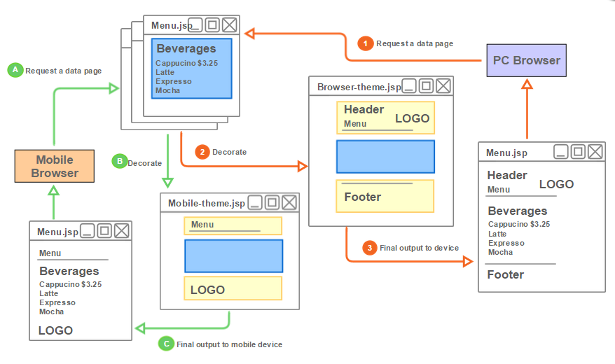SiteMesh is easy to learn. 5 minutes to setup, and 10 minutes to start being useful.
Setup Library File
Download from http://wiki.sitemesh.org/wiki/display/sitemesh/Download
Copy the SiteMesh jar file to WEB-INF/lib directory
or Add maven depandency
opensymphony
sitemesh
2.4.2
Add SiteMesh Filter
Modify web.xml
sitemesh
com.opensymphony.sitemesh.webapp.SiteMeshFilter
sitemesh
/*
Define Decorator and Pattern
Create the a decorators.xml file in WEB-INF directory
/*login*
/*logout*
/*accessdenied*
/403.jsp*
/404.jsp*
/*modal* ;
/*Popup*
/*view*
/*
Setup Decorators
create main.jsp in decorators folder in webapp
<?xml version="1.0" encoding="UTF-8" ?>
<%@ taglib uri="http://www.opensymphony.com/sitemesh/decorator" prefix="decorator" %>
<!DOCTYPE html PUBLIC "-//W3C//DTD XHTML 1.0 Transitional//EN"
"http://www.w3.org/TR/xhtml1/DTD/xhtml1-transitional.dtd">
<html xmlns="http://www.w3.org/1999/xhtml">
<head>
<title></title>
</head>
<body>
<h1>Header</h1>
<p><b>Navigation</b></p>
<hr />
<decorator:body />
<hr />
<h1>Footer</b></h1>
</body>
</html>
Exercise
- Apply decorator to WebApplication
Ajax & JSON
What?
Ajax (Asynchronous JavaScript And XML)
Ajax is the art of exchanging data with a server, and updating parts of a web page - without reloading the whole page.
A typical Ajax request
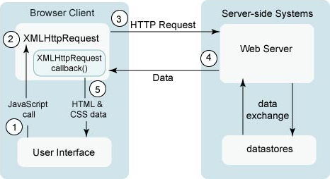It Based on Internet Standards and uses a combination of :
- XMLHttpRequest object (to exchange data with a server)
- JavaScript/DOM (to display/interact with the information)
- CSS (to style the data)
- XML/JSON (often used as the format for transferring data)
A typical Ajax request(cont.)
- user clicks, invoking event handler
- that handler's JS code creates an XMLHttpRequest object
- XMLHttpRequest object requests a document from a web server
- server retrieves appropriate data, sends it back
- XMLHttpRequest fires event to say that the data has arrived
- this is often called a callback
- you can attach a handler to be notified when the data has arrived
- your callback event handler processes the data and displays it
Example
Let AJAX change this text
JSON (JavaScript Object Notation)
- JSON is a lightweight data-interchange format
- JSON is language independent *
- JSON is "self-describing" and easy to understand
What?
JSON Syntax Rules
JSON syntax is derived from JavaScript object notation syntax
| Data is in name/value pairs |
|
| Data is separated by commas |
|
| Curly braces hold objects |
|
| Square brackets hold arrays |
|
Example
{
"firstName" : "Ekkachai",
"lastName" : "Kaewprasert",
"course" : [
{"name":"Java Debelop Tools", "hour":8},
{"name":"Source Control", "hour":8},
{"name":"Jasper & iReport", "hour":16},
{"name":"StrutsMVC", "hour":16},
{"name":"SpringMVC", "hour":24}
]
}
JSON Values
- A number (integer or floating point)
- A string (in double quotes)
- A Boolean (true or false)
- An array (in square brackets)
- An object (in curly braces)
- null
JSON in JavaScript
- JSON.stringify turns an object in to a JSON text and stores that JSON text in a string
- JSON.parse turns a string of JSON text into an object.
//define a json object
var employee = { "name": "John Johnson", "street": "Oslo West 16", "phone": "555 1234567" };
//use JSON.stringify to convert it to json string
var jsonstring = JSON.stringify(employee);
//convert json string to json object using JSON.parse function
var jsonobject = JSON.parse(jsonstring);
JSON in SpringMVC
Add JSON dependency
com.fasterxml.jackson.core
jackson-core
2.4.1
com.fasterxml.jackson.core
jackson-databind
2.4.1
com.fasterxml.jackson.core
jackson-annotations
2.4.1
Jackson infinite recursion problem
In the following example we have two entities – “Category” and “Product” – with a simple one-to-many relationship
public class Category(){
private Integer id;
private String name;
@OneToMany
//FetchType Eager
private List<Product> products;
}
public class Product(){
private Integer id;
private String name;
@ManyToOne
private Category category;
}
JSON Annotations
- @JsonManagedReference, @JsonBackReference
- @JsonIdentityInfo
- @JsonIgnore
- @JsonView
- @JsonFormat
Use @JsonManagedReference, @JsonBackReference
public class Category(){
private Integer id;
private String name;
@JsonBackReference
@OneToMany
private List<Product> products;
}
public class Product(){
private Integer id;
private String name;
@JsonManagedReference
@ManyToOne
private Category category;
}
- @JsonManagedReference is the forward part of reference – the one that gets serialized normally.
- @JsonBackReference is the back part of reference – it will be omitted from serialization.
@JsonManagedReference, @JsonBackReference Example
[
{"productId":1,"productName":"Chang","price":60,"category":{"categoryId":1,"categoryName":"Beverages"}},
{"productId":2,"productName":"Leo","price":55,"category":{"categoryId":1,"categoryName":"Beverages"}},
{"productId":3,"productName":"Singha","price":65,"category":{"categoryId":1,"categoryName":"Beverages"}},
{"productId":4,"productName":"Massaman","price":220,"category":{"categoryId":2,"categoryName":"Food"}},
{"productId":5,"productName":"Friedrice","price":220,"category":{"categoryId":2,"categoryName":"Food"}},
{"productId":9,"productName":"11122","price":111,"category":{"categoryId":2,"categoryName":"Food"}}
]
[
{"categoryId":1,"categoryName":"Beverages"},
{"categoryId":2,"categoryName":"Food"}
]
Use @JsonIdentityInfo
@JsonIdentityInfo(generator = ObjectIdGenerators.PropertyGenerator.class, property = "id")
public class Category(){
private Integer id;
private String name;
@OneToMany
private List<Product> products;
}
@JsonIdentityInfo(generator = ObjectIdGenerators.PropertyGenerator.class, property = "id")
public class Product(){
private Integer id;
private String name;
@ManyToOne
private Category category;
}
- @JsonIdentityInfo - full object and object identity, and other references to the object as reference values.
- NOT support for JSON Array types (Java arrays or Lists) or Java Map types
@JsonIdentityInfo Example
[
{"categoryId":1,"categoryName":"Beverages",
"products":[{"productId":3,"productName":"Singha","price":65,"category":1},
{"productId":2,"productName":"Leo","price":55,"category":1},
{"productId":1,"productName":"Chang","price":60,"category":1}
]
},1,1,
{"categoryId":2,"categoryName":"Food",
"products":[{"productId":4,"productName":"Massaman","price":220,"category":2},
{"productId":5,"productName":"Fried rice","price":220,"category":2}
]
},2
]
[
{"productId":1,"productName":"Chang","price":60,
"category":{"categoryId":1,"categoryName":"Beverages",
"products":[{"productId":3,"productName":"Singha","price":65,"category":1},
{"productId":2,"productName":"Leo","price":55,"category":1}
,1 ]
}
},2,3,
{"productId":4,"productName":"Massaman","price":220,
"category":{"categoryId":2,"categoryName":"Food",
"products":[{"productId":5,"productName":"Fried rice","price":220,"category":2},4]
}
},5
]
Use @JsonIgnore
public class Category(){
private Integer id;
private String name;
@JsonIgnore
@OneToMany
private List<Product> products;
}
public class Product(){
private Integer id;
private String name;
@ManyToOne
private Category category;
}
- @JsonIgnore annotation to simply ignore one of the sides of the relationship, thus braking the chain.
@JsonIgnore Example
[
{"productId":1,"productName":"Chang","price":60,"category":{"categoryId":1,"categoryName":"Beverages"}},
{"productId":2,"productName":"Leo","price":55,"category":{"categoryId":1,"categoryName":"Beverages"}},
{"productId":3,"productName":"Singha","price":65,"category":{"categoryId":1,"categoryName":"Beverages"}},
{"productId":4,"productName":"Massaman","price":220,"category":{"categoryId":2,"categoryName":"Food"}},
{"productId":5,"productName":"Friedrice","price":220,"category":{"categoryId":2,"categoryName":"Food"}},
{"productId":9,"productName":"11122","price":111,"category":{"categoryId":2,"categoryName":"Food"}}
]
[
{"categoryId":1,"categoryName":"Beverages"},
{"categoryId":2,"categoryName":"Food"}
]
Use @JsonView
public class Views {
public static class Public { }
public static class Internal extends Public { }
}
public class Category(){
@JsonView(Views.Public.class)
private Integer id;
@JsonView(Views.Public.class)
private String name;
@JsonView(Views.Internal.class)
@OneToMany
private List<Product> products;
}
public class Product(){
@JsonView(Views.Public.class)
private Integer id;
@JsonView(Views.Public.class)
private String name;
@JsonView(Views.Public.class)
@ManyToOne
private Category category;
}
- @JsonView annotation exclude one side of the relationship.
@JsonView in Controller
@JsonView(Views.Public.class)
@RequestMapping(value="/pet", method={RequestMethod.POST})
public @ResponseBody Pet getPet(@RequestBody Pet pet,, Model model) {
// implementation omitted
}
@JsonView Example
@JsonView(Views.Public.class)
[
{"productId":1,"productName":"Chang","price":60,"category":{"categoryId":1,"categoryName":"Beverages"}},
{"productId":2,"productName":"Leo","price":55,"category":{"categoryId":1,"categoryName":"Beverages"}},
{"productId":3,"productName":"Singha","price":65,"category":{"categoryId":1,"categoryName":"Beverages"}},
{"productId":4,"productName":"Massaman","price":220,"category":{"categoryId":2,"categoryName":"Food"}},
{"productId":5,"productName":"Friedrice","price":220,"category":{"categoryId":2,"categoryName":"Food"}},
{"productId":9,"productName":"11122","price":111,"category":{"categoryId":2,"categoryName":"Food"}}
]
@JsonView(Views.Internal.class)
java.lang.StackOverflowError
Use @JsonFormat
public class Employee(){
private Integer id;
private String name;
@JsonFormat(pattern = "dd-MM-yyyy", shape=JsonFormat.Shape.STRING)
private Date birthDay;
}
- @JsonFormat annotation control the date format
@JsonFormat Example
[
{"employeeId":1,"firstName":"Nancy","lastName":"Peacock","birthDay":"03-04-1990"},
{"employeeId":2,"firstName":"Andrew","lastName":"Fuller","birthDay":"03-04-1990"},
{"employeeId":3,"firstName":"Steven","lastName":"King","birthDay":"03-04-1990"}
]
Spring Annotations
@RequestMapping
(value="/pet", method=RequestMethod.POST,consumes="application/json", produces="application/json")
public @ResponseBody Pet getPet(@RequestBody Pet pet,, Model model) {
// implementation omitted
}
- @ResponseBody
- @RequestBody
- @RequestMapping
- consumes
- produces
JQuery Ajax
<script type="text/javascript">
$( function(){
$("selector").on( "click", function(){
$.ajax({
url : 'URL',
type: 'POST',
contentType: 'application/json',
data: Data,
dataType: "json",
success : function(data) { },
error: function (jqXHR, textStatus, error) { }
});
});
});
</script>
Example JSP
<html lang="en">
<head>...</head>
<body>
Sample Ajax with Spring MVC
</body>
</html>
Example JavaScript
<script type="text/javascript">
$( function(){
$("#searchBtn").click(function(){
$.ajax({
url : '${pageContext.request.contextPath}/ajax/get'+$("#ajaxRequest").val()+'List/',
type: 'POST',
contentType: 'application/json',
dataType: "json",
success : function(data) {
$('#outputajax').text(JSON.stringify(data));
},
error: function (jqXHR, textStatus, error) {
$('#outputajax').text(jqXHR+" : "+ textStatus+" : "+error); }
});
});
});
</script>
Example Controller
@Controller
public class SampleAjaxController {
@Autowired private ProductService productService;
@RequestMapping(value="/sampleajax", method ={RequestMethod.GET})
public String samplePage(){
return "ajax/sampleAjax";
}
@RequestMapping(value="/ajax/getProductList/", method ={RequestMethod.POST})
public @ResponseBody List<Product> listProduct(){
return productService.findAll();
}
}
Result
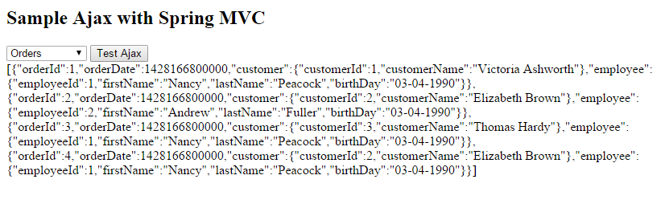Exercise
- Create Ajax Function with
- Insert
- Select
- Update
- Delete
JQuery DataTable
DataTables Table plug-in for jQuery
DataTables is a plug-in for the jQuery Javascript library. That will add advanced interaction controls to any HTML table.
DataTables Features
- Pagination, instant search and multi-column ordering
- Supports almost any data source:
- Easily theme-able: DataTables, jQuery UI, Bootstrap, Foundation
- Wide variety of extensions inc. Editor, TableTools, FixedColumns and more
- Extensive options and a beautiful, expressive API
- Fully internationalisable
- etc.
Easy is it to use DataTables?
Call function to initialise the table
$(document).ready(function(){
$('#myTable').DataTable();
});
Include two files additional in your page
https//cdn.datatables.net/1.10.8/css/jquery.dataTables.min.css
https//cdn.datatables.net/1.10.8/js/jquery.dataTables.min.js
DataTables Installation
- Requirements
- Dependencies
- HTML table
- Including Javascript / CSS
- Using a CDN
- Locally
- Initialising DataTables
Requirements
- Dependencies
- jQuery 1.7 or newer will work with DataTables
- HTML
Column 1
Column 2
Row 1 Data 1
Row 1 Data 2
Row 2 Data 1
Row 2 Data 2
Including Javascript / CSS
- CDN
<!-- DataTables CSS -->
<link rel="stylesheet" type="text/css" href="//cdn.datatables.net/1.10.8/css/jquery.dataTables.css">
<!-- jQuery -->
<script type="text/javascript" charset="utf8" src="//code.jquery.com/jquery-1.10.2.min.js"> </script>
<!-- DataTables -->
<script type="text/javascript" charset="utf8" src="//cdn.datatables.net/1.10.8/js/jquery.dataTables.js"></script>
- Locally
<!-- DataTables CSS -->
<link rel="stylesheet" type="text/css" href="/DataTables-1.10.8/media/css/jquery.dataTables.css">
<!-- jQuery -->
<script type="text/javascript" charset="utf8" src="/DataTables-1.10.8/media/js/jquery.js"> </script>
<!-- DataTables -->
<script type="text/javascript" charset="utf8" src="/DataTables-1.10.8/media/js/jquery.dataTables.js"> </script>
Datatables in Sping MVC
Use <mvc:resources> map static folder to root directory of server
<mvc:resources mapping="/static/**" location="/" />
Including Javascript / CSS
<!-- DataTables CSS -->
<link rel="stylesheet" type="text/css" href="<c:url value="/static/DataTables-1.10.8/media/css/jquery.dataTables.css"/>">
<!-- jQuery -->
<script type="text/javascript" src="<c:url value="/static/DataTables-1.10.8/media/js/jquery.js"/>"> </script>
<!-- DataTables -->
<script type="text/javascript" src="<c:url value="//static/DataTables-1.10.8/media/js/jquery.dataTables.js"/>"></script>
Initialising DataTables
$(document).ready( function () {
$('#table_id').DataTable();
} );
Column 1
Column 2
Row 1 Data 1
Row 1 Data 2
Row 2 Data 1
Row 2 Data 2
Result
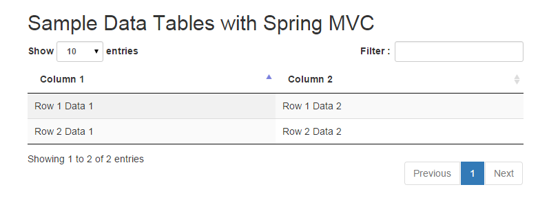Exercise
- Create sample table with Datatable plugin
Options
Configuration of DataTables is done by passing the options you want defined into the DataTables constructor as an object. For example:
// Disable paging, search and ordering
$('#table_id').DataTable( {
paging: false,
searching: false,
ordering: false
});
Setting defaults
// Disable search and ordering by default
$.extend( $.fn.dataTable.defaults, {
searching: false,
ordering: false
} );
// For this specific table we are going to enable ordering
// (searching is still disabled)
$('#example').DataTable( {
ordering: true
} );
Full list of options : https://datatables.net/reference/option/
DataTables - Data options
| Tag | Description |
|---|---|
| data | Data to use as the display data for the table. |
| ajax | Load data for the table's content from an Ajax source |
| ajax.data | Add or modify data submitted to the server upon an Ajax request |
| ajax.dataSrc | Data property or manipulation method for table data |
Data options - data
Data to use as the display data for the table.
$('#table_id').DataTable( {
"data": [
["Tiger Nixon","System Architect"],
["Garrett Winters","Director"]
]
} );
$('#table_id2').DataTable( {
"data": [
{
"name": "Tiger Nixon",
"position": "System Architect",
"salary": "$3,120",
"start_date": "2011/04/25",
"office": "Edinburgh",
"extn": "5421"
}
]
} );
Example
<h2>Data Table with data(array) </h2>
<table id="table_id" class="display">
<thead>
<tr>
<th>Name </th>
<th>Position </th>
</tr>
</thead>
<tbody> </tbody>
</table>
<h2>Data Table with data(object) </h2>
<table id="table_id2" class="display">
<thead>
<tr>
<th>Name </th>
<th>Position </th>
<th>Salary </th>
<th>Start Date </th>
<th>Office </th>
<th>Extn </th>
</tr>
</thead>
<tbody> </tbody>
</table>
Result
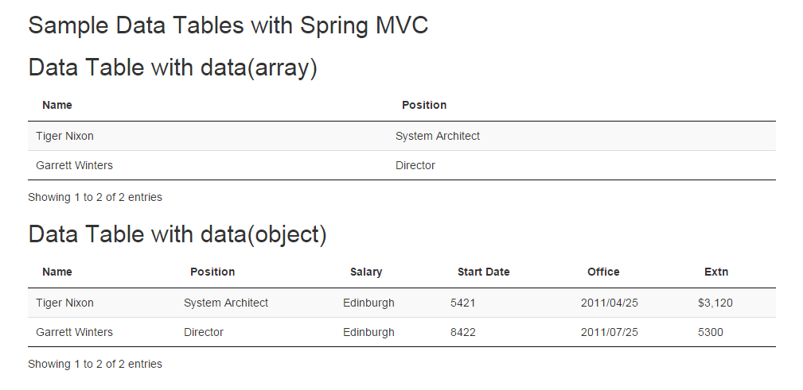Data options - ajax
- Load data for the table's content from an Ajax source
- ajax.data
- ajax.dataSrc
$('#tableData').DataTable( {
ajax: {
url : '${pageContext.request.contextPath}/sampleajaxcrud/listAllProducts.html/',
type : 'POST',
data : function ( d ) {
d.searchCriteria = $('#searchText').val();
},
dataSrc : ""
}
});
Result
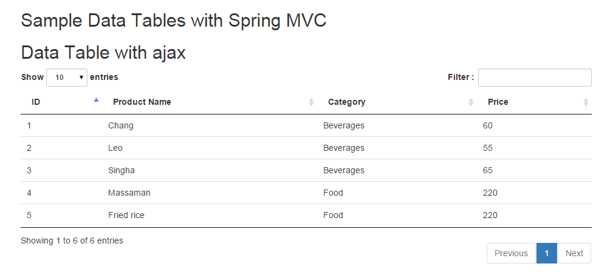Exercise
- Create jsp page and use data from ajax source
Datatables - columns option
The columns option in the initialisation parameter allows you to define details about the way individual columns behave
- Set column specific initialisation properties.
$('#example').dataTable( {
"columns": [
{ "searchable": false },
{ "data": "name", "className":"dt-center" },
{ "defaultContent": "Not set" },
{ "data": function(data) {
return 'something';
}},
null
]
} );
Reference : https://datatables.net/reference/option/columns
Datatables - columnDefs option
Very similar to columns, although in this case the column options defined can be applied to one or more columns. Additionally, not every column need be specified, unlike columns
- Set column specific initialisation properties.
$('#example').dataTable( {
"columnDefs": [
{ "targets": 0, "searchable": false },
{ "targets": [4,5], "orderable": false }
]
} );
Reference : https://datatables.net/reference/option/columnDefs
Datatables - dom option
Datatables can add elements around the table by a single letter, and that letter it used in this dom configuration option to indicate where that element will appear in the document
Since: DataTables 1.10
| Letter | Description |
|---|---|
| l | length changing input control |
| f | filtering input |
| t | The table! |
| i | Table information summary |
| p | pagination control |
| r | processing display element |
| < > | <div> div element |
| <"className" > | <div class="className"> div with a class |
| <#id > | <div id ="id"> div with an ID |
Example
$('#tableData').DataTable( {
ajax: {
url : '${pageContext.request.contextPath}/sampleajaxcrud/listAllProducts.html/',
type : 'POST',
data : function ( d ) {
d.searchCriteria = $('#searchText').val();
},
dataSrc : ""
},
dom : 'lprt<"toolbar">if',
initComplete : function (){
$("div.toolbar").html("Custom tool bar! Text/images etc.").css("float","left");
}
} );
Result
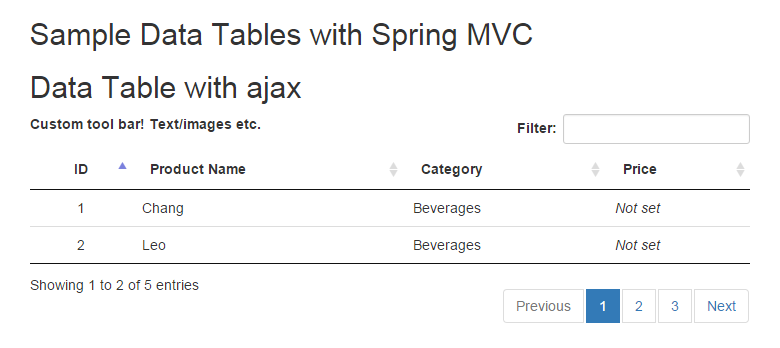Example
$('#tableData').DataTable( {
ajax: {
url : '${pageContext.request.contextPath}/sampleajaxcrud/listAllProducts.html/',
type : 'POST',
data : function ( d ) {
d.searchCriteria = $('#searchText').val();
},
dataSrc : ""
},
dom : 'lprt<"toolbar">if',
initComplete : function (){
$("div.toolbar").html("Custom tool bar! Text/images etc.").css("float","left");
}
} );
Result
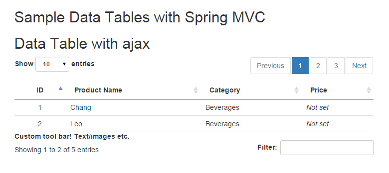Questions?
Datatables API
DataTables has an extensive API which can be used to access the data in a table and manipulate the table after the table initialisation has completed.
- The API can be accessed through the following methods:
$( selector ).DataTable();
$( selector ).dataTable().api();
new $.fn.dataTable.Api( selector );
Api Reference : https://datatables.net/reference/api/
Datatables API - Rows
| Name | Description |
|---|---|
| row() | Select a single row from a table. |
| row().data() | Get / set the data for the selected row.
|
| row.add() | Add a new row to the table.
|
| row().remove() | Delete the selected row from the DataTable.
|
Datatables API - Rows(cont.)
| Name | Description |
|---|---|
| rows() | Select multiple rows from a table. |
| rows().data() | Get the data for the selected rows.
|
| rows.add() | Add multiple new rows to the table.
|
| rows().remove() | Delete the selected rows from the DataTable.
|
dataTable() vs. DataTable()
| # | dataTable() | DataTable() |
|---|---|---|
| constructor |
|
|
| API |
|
|
| Supported by version | 1.9, 1.10 | 1.10 |
| Combining to DataTable() |
|
|
If you dont use the new API, there is no reason for using the DataTable constructor. The dataTable constructor is not deprecated.
Questions?
Exercise
- Use DataTable API
- add row
- update row
- remove row
Styling
Default styling options
DataTables provides a base set of styles to elements by adding class names to your table tag
- Table classes
- Cell classes
Default styling :https://datatables.net/manual/styling/classes
Theme creator https://datatables.net/manual/styling/theme-creator
Table classes
The default DataTables stylesheet has the following class names available to control the different styling features of datatables
| Class name | Description |
|---|---|
| display | Short-hand for the stripe, hover, row-border and order-column classes. |
| cell-border | Border around all four sides of each cell |
| compact | Reduce the amount of white-space the default styling for the DataTable uses (since 1.10.1) |
| hover | Row highlighting on mouse over |
| nowrap | Disable wrapping of content in the table (since 1.10.1) |
| order-column | Highlight the column that the table data is currently ordered on |
| row-border | Border around only the top an bottom of each each (i.e. for the rows).Note cell-border and row-border are mutually exclusive and cannot be used together. |
| stripe | Row striping |
Cell classes
DataTable stylesheet also has basic options for the styling of cells. These can be applied to class individually using HTML, or use columns.className to apply them to all cells in a column.
| Class name | Description |
|---|---|
| dt[-head|-body]-left | Left aligned text |
| dt[-head|-body]-center | Center aligned text |
| dt[-head|-body]-right | Right aligned text |
| dt[-head|-body]-justify | Justify aligned text |
| dt[-head|-body]-nowrap | nowrap aligned text |
Cell classes(Example)
- dt-right - Right align text in the header and body.
- dt-head-right - Right align text in the header only
- dt-body-right - Right align text in the body only.
eg.
$('#tableData').DataTable( {
columns: [
{ "data": "productId" ,"className":"dt-center"},
{ "data": "productName","className":"dt-head-right" },
{ "data": "category.categoryName","className":"dt-body-center" },
{ "data": "price","className":"dt-body-right" }
]
} );
Internationalizable
Make DataTables display in different languages.
$('#example').dataTable( {
"language": {
"url": "//cdn.datatables.net/plug-ins/1.10.8/i18n/Thai.json"
}
} );
Internalizable site : https://datatables.net/plug-ins/i18n/
Exercise
- Make web with datatable support internalization
- Thai
- English
Spring MVC with Upload File
Spring’s multipart (file upload)
Spring provides MultipartResolver for use with Commons FileUpload and another for use with Servlet 3.0 multipart request parsing.
Using a MultipartResolver
Configuration in applicationContext.xml or dispatcher-servlet.xml
<bean id="multipartResolver"
class="org.springframework.web.multipart.commons.CommonsMultipartResolver">
<!-- one of the properties available; the maximum file size in bytes -->
<property name="maxUploadSize" value="100000"/>
</bean>
File upload in a form
Create a form with a file input to upload.
<html lang="en">
<head> </head>
<body>
<h1>Sample Upload with Spring MVC </h1>
<h2>Please upload a file </h2>
<form method="post" enctype="multipart/form-data"
action="${pageContext.request.contextPath}/sampleupload" >
<input type="file" name="file"/>
<input type="submit"/>
</form>
<div>${ fileName } </div>
</body>
</html>
***The encoding attribute ( enctype="multipart/form-data") lets the browser know how to encode the form as multipart request
Example Upload Controller
@Controller
public class SampleUploadController {
@RequestMapping( value = "sampleupload", method = RequestMethod.GET)
public String uploadPage(){
return "upload/sampleUpload";
}
@RequestMapping( value = "/sampleupload", method = RequestMethod.POST)
public String upload(@RequestParam("file") MultipartFile file, Model model){
model.addAttribute("fileName", "Not multipart upload!!");
if (!file.isEmpty()) {
// store the bytes somewhere
model.addAttribute("fileName", "Upload file "+file.getOriginalFilename()+ " success!!!");
}
return "upload/sampleUpload";
}
}
Result
Exercise
- Make Web Application to support upload file
- Save file upload to physical file system
Display Image on Spring MVC
How to display image
Used Html <img/> tag with JSTL <c:url />
<img src="<c:url value='source_image' />"/>
Source file:
- File on root directory of server
- Physical file system
Display Image from root directory of server
Use <mvc:resources> map static folder to root directory of server
<mvc:resources mapping="/static/**" location="/" />
On Jsp
<img src="<c:url value="/static/ImageFolder/imageName" />"/>
Display Image from physical file system
- Use <mvc:resources>
- Create DisplayImageServlet
- @ResponseBody, HttpEntity
Display Image from physical file system
Use <mvc:resources> map static folder to physical file system
<mvc:resources mapping="/images/**" location="file:///C:/ImageFolder/" />
On Jsp
<img src="<c:url value="/images/imageName" />"/>
Display by DisplayImageServlet
Create DisplayImageServlet
/** DisplayImageServlet*/
public class DisplayImageServlet extends HttpServlet {
protected void doGet(HttpServletRequest request, HttpServletResponse response) throws ServletException,
IOException {
this.displayImage(request, response);
}
public void displayImage(HttpServletRequest request, HttpServletResponse response) throws ServletException,
IOException{
File imageFile = new File("ImageFolder"+request.getParameter("fileName"));
FileInputStream fin = new FileInputStream(imageFile);
ServletOutputStream outStream = response.getOutputStream();
response.setContentType("image/png");
int i = 0;
while (i != -1) {
i = fin.read();
outStream.write(i);
} fin.close();
}
}
Display by DisplayImageServlet(cont)
web.xml
/** Mapping Servlet in web.xml*/
<servlet>
<servlet-name>DisplayImageServlet </servlet-name>
<servlet-class>com.aug.servlet.DisplayImageServlet </servlet-class>
</servlet>
<servlet-mapping>
<servlet-name>DisplayImageServlet </servlet-name>
<url-pattern>/DisplayImageServlet </url-pattern>
</servlet-mapping>
On Jsp
<img src="<c:url value="${pageContext.request.contextPath}/DisplayImageServlet?fileName=imageName" />"/>
Display by @ResponseBody, HttpEntity
Controller
@RequestMapping("/imageRequest/{imageName}")
public @ResponseBody HttpEntity <byte[]> getPhoto(@PathVariable String imageName) throws IOException {
byte[] image = FileUtils.readFileToByteArray(new File("ImageFolder"+ imageName + ".png"));
HttpHeaders headers = new HttpHeaders();
headers.setContentType(MediaType.IMAGE_PNG);
headers.setContentLength(image.length);
return new HttpEntity <byte[]>(image, headers);
}
On Jsp
<img src="<c:url value="${pageContext.request.contextPath}/imageRequest/imageNameWithoutExtension" />"/>
Sample Controller
@Controller
public class DisplayImageController {
@RequestMapping( value="/sampledisplayimage.html", method={RequestMethod.GET})
public String sampleDisplayImage(){
return "displayimg/sampleDisplayImage";
}
@RequestMapping("/imageRequest/{imageName}")
public @ResponseBody HttpEntity <byte[]> getPhoto(@PathVariable String imageName) throws IOException {
byte[] image = FileUtils.readFileToByteArray(new File("ImageFolder"+ imageName + ".png"));
HttpHeaders headers = new HttpHeaders();
headers.setContentType(MediaType.IMAGE_PNG);
headers.setContentLength(image.length);
return new HttpEntity <byte[]>(image, headers);
}
}
Sample JSP
<html lang="en">
<head> </head>
<body>
<h1>Sample Display Image on Spring MVC </h1>
<table border="1">
<tr>
<td> <div>Load image from server root directory <br>
<img style="height: 200px;" src=" <c:url value="/static/images/Documentsx.png" />"/> </div> </td>
<td> <div>Load image from physical file system by DisplayImaage <br>
<img style="height: 200px;" src="${pageContext.request.contextPath}/DisplayImageServlet?fileName=Documentsx.png"/> </div> </td>
<td> <div>Load image from physical file system by mvc:resources <br>
<img style="height: 200px;" src=" <c:url value="/images/Documentsx.png" />"/> </div> </td>
<td> <div>Load image from physical file system by ResponseBody <br>
<img style="height: 200px;" src="${pageContext.request.contextPath}/imageRequest/Documentsx"/> </div> </td>
</tr>
</table>
</body>
</html>
Result
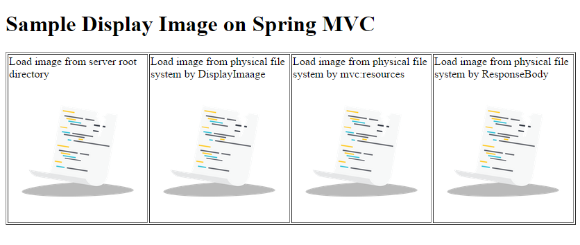Exercise
- Display Image on Jsp
Spring MVC Exception Handling
Exception Handling
- Handling by web.xml
- Handling by Spring MVC Framework
- Controller Based
- Global Exception Handler
- HandlerExceptionResolver
Handling by web.xml
When a servlet throws an exception, the web container searches the configurations element for a match with the thrown exception type in web.xml
error-page Element
The optional error-page element specifies a mapping between an error code or exception type to the path of a resource in the Web application.
| Element | Req/Opt | Description |
|---|---|---|
| <error-code> | Optional | A valid HTTP error code, for example, 404. |
| <exception-type> | Optional | A fully-qualified class name of a Java exception type, for example, java.lang.ArithmeticException |
| <location> | Required | The location of the resource to display in response to the error. For example, /error.jsp |
Declaring in Deployment Descriptor
Declaring an error page for all type of exception
<error-page>
<exception-type>java.lang.Throwable </exception-type>
<location>/WEB-INF/views/errors/error.jsp </location>
</error-page>
Declaring an error page for more detailed exception
<error-page>
<exception-type>java.lang.ArithmeticException </exception-type>
<location>/WEB-INF/views/errors/error.jsp </location>
</error-page>
Declaring an error page based on HTTP Status code
<error-page>
<error-code>404 </error-code>
<location>/WEB-INF/views/errors/error.jsp </location>
</error-page>
Example web.xml
<web-app>
<display-name>My Web Application </display-name>
<servlet>
<servlet-name>myweb </servlet-name>
<servlet-class>org.springframework.web.servlet.DispatcherServlet </servlet-class>
<load-on-startup>1 </load-on-startup>
</servlet>
<servlet-mapping>
<servlet-name>myweb </servlet-name>
<url-pattern>/ </url-pattern>
</servlet-mapping>
<error-page>
<exception-type>java.lang.Throwable </exception-type>
<location>/WEB-INF/views/errors/error.jsp </location>
</error-page>
<error-page>
<error-code>404 </error-code>
<location>/WEB-INF/views/errors/error.jsp </location>
</error-page>
</web-app>
Example error.jsp
<%@ page language="java" contentType="text/html; charset=UTF-8" pageEncoding="UTF-8"%>
<%@ taglib uri="http://java.sun.com/jsp/jstl/core" prefix="c"%>
<%@ page isErrorPage="true"%>
<!DOCTYPE html>
<html lang="en">
<head>
<meta charset="utf-8">
</head>
<body>
<h1>Web.xml Handler Exception </h1>
<a href="/myweb">BACK TO HOME</a>
<h2>Error Code : ${pageContext.errorData.statusCode} </h2>
<h3>URL : ${pageContext.exception} </h3>
<h4>${pageContext.errorData.requestURI} </h4>
<c:forEach var="trace" items="${pageContext.exception.stackTrace}">
<p>${trace} </p>
</c:forEach>
</body>
</html>
Result
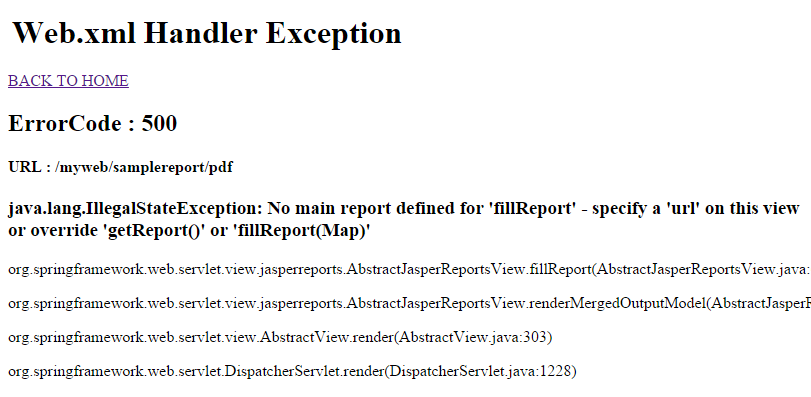Handling by Spring MVC
SpringMVC provides following ways to help us achieving exception handling
- Controller Based
- Global Exception Handler
- HandlerExceptionResolver implementation
Controller Based
Define exception handler methods in controller classes, when all the exceptions thrown by request, handler method will have handled.
/** Controller Based */
public class SampleExceptionController {
private static final Logger logger = LoggerFactory.getLogger(SampleExceptionController.class);
@RequestMapping( value = "sampleexception", method = RequestMethod.GET)
public String pageException() throws Exception{
throw new IOException();
}
/** Any Exception extends java.lang.Throwable.class */
@ExceptionHandler({ java.lang.Throwable.class ,Exception.class})
public ModelAndView handleException(HttpServletRequest request, Exception ex) {
logger.error("Requested URL : "+request.getRequestURL());
logger.error("Exception : "+ex);
ModelAndView modelAndView = new ModelAndView();
modelAndView.setViewName("errors/mvcerror");
return modelAndView;
}
}
Standard Spring MVC Exceptions
| Exception | HTTP Status Code |
|---|---|
| BindException | 400 (Bad Request) |
| ConversionNotSupportedException | 500 (Internal Server Error) |
| HttpMediaTypeNotAcceptableException | 406 (Not Acceptable) |
| HttpMediaTypeNotSupportedException | 415 (Unsupported Media Type) |
| HttpMessageNotReadableException | 400 (Bad Request) |
| HttpMessageNotWritableException | 500 (Internal Server Error) |
| HttpRequestMethodNotSupportedException | 405 (Method Not Allowed) |
| MethodArgumentNotValidException | 400 (Bad Request) |
| MissingServletRequestParameterException | 400 (Bad Request) |
| MissingServletRequestPartException | 400 (Bad Request) |
| NoHandlerFoundException | 404 (Not Found) |
| NoSuchRequestHandlingMethodException | 404 (Not Found) |
| TypeMismatchException | 400 (Bad Request) |
Result
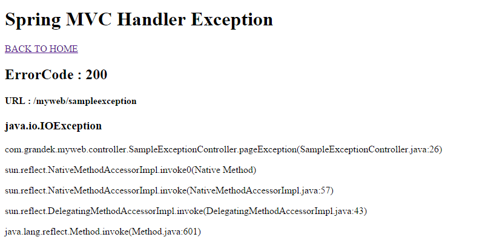Global Exception Handler
Exception handler methods can use with any class and used when controller class is not able to handle the exception
@ControllerAdvice
public class GlobalExceptionController {
private static final Logger logger = LoggerFactory.getLogger(GlobalExceptionController.class);
@ExceptionHandler({ java.lang.Throwable.class, Exception.class })
public ModelAndView handleException(HttpServletRequest request, Exception ex) {
logger.error("Requested URL : " + request.getRequestURL());
logger.error("Exception : " + ex);
ModelAndView modelAndView = new ModelAndView();
modelAndView.setViewName("errors/mvcerror");
return modelAndView;
}
@ResponseStatus(value=HttpStatus.NOT_FOUND, reason="IOException occured")
@ExceptionHandler(IOException.class)
public String handleIOException(){
logger.error("IOException handler executed");
return "errors/mvcerror";
}
}
Exercise
- Handling Exception from web application
- Create difference errors page for each code
HandlerExceptionResolver
Spring Framework provides HandlerExceptionResolver interface that we can implement to create global exception handler
- In a Spring MVC application, you can register one or more exception resolver to resolve uncaught exceptions.
SimpleMappingExceptionResolver
SimpleMappingExceptionResolver is the default implementation class, it allows us to configure exceptionMappings where we can specify which resource to use for a particular exception.
Configuration
errors/myExceptionView
errors/ioerror
errors/simpleerror
MyException
package com.grandek.exception;
import java.util.Date;
public class MyException extends RuntimeException {
private Date date;
private String message;
public MyException(Date date, String message) {
super();
this.date = date;
this.message = message;
}
public Date getDate() {return date;}
public String getMessage() {return message;}
@Override
public String toString() {
return "MyException [date=" + date + ", message=" + message + "]";
}
}
Result
Questions?
Interceptor
Spring MVC Interceptor
Spring MVC provides a powerful mechanism to intercept an http request. Similar to Servlet Filter concept, Spring MVC provides a way to define special classes called Interceptors that gets called before and after a request is served.
HandlerInterceptor
Each interceptor must implement HandlerInterceptor interface
There are three methods that need to be implemented.
| Mothod | Description |
|---|---|
| preHandle(..) | Called before the handler execution, returns a boolean value, “true” : continue the handler execution chain; “false”, stop the execution chain and return it. |
| postHandle(..) | Called after the handler execution, allow manipulate the ModelAndView object before render it to view page. |
| afterCompletion(..) | Called after the complete request has finished. Seldom use, cant find any use case. |
Interceptor Example
MaintenanceInterceptor
public class MaintenanceInterceptor extends HandlerInterceptorAdapter{
private int maintenanceStartTime;
private int maintenanceEndTime;
private String maintenanceMapping;
// the usual getters and setters...
@Override
public boolean preHandle(HttpServletRequest request, HttpServletResponse response, Object handler) throws Exception {
int hour = Calendar.getInstance().get(Calendar.HOUR_OF_DAY);
if (hour >= maintenanceStartTime && hour < maintenanceEndTime) {
//maintenance time, send to maintenance page
response.sendRedirect(maintenanceMapping);
return false;
} else {
return true;
}
}
}
Interceptor Example(cont.)
ExecuteTimeInterceptor
public class ExecuteTimeInterceptor extends HandlerInterceptorAdapter {
@Override
public boolean preHandle(HttpServletRequest request, HttpServletResponse response, Object handler) throws Exception {
long startTime = System.currentTimeMillis();
request.setAttribute("startTime", startTime);
return true;
}
@Override
public void postHandle(HttpServletRequest request, HttpServletResponse response, Object handler, ModelAndView modelAndView) throws Exception {
long startTime = (Long) request.getAttribute("startTime");
long endTime = System.currentTimeMillis();
long executeTime = endTime - startTime;
System.out.println("[" + handler + "] executeTime : " + executeTime + "ms");
}
}
Configuration
<beans xmlns="http://www.springframework.org/schema/beans"
xmlns:mvc="http://www.springframework.org/schema/mvc"
xsi:schemaLocation="
http://www.springframework.org/schema/mvc http://www.springframework.org/schema/mvc/spring-mvc-4.0.xsd">
<mvc:interceptors>
<mvc:interceptor>
<mvc:mapping path="/**"/>
<mvc:exclude-mapping path="/maintenance"/>
<bean class="com.grandek.myweb.interceptor.MaintenanceInterceptor">
<property name="maintenanceStartTime" value="10" />
<property name="maintenanceEndTime" value="14" />
<property name="maintenanceMapping" value="/myweb/maintenance" />
</bean>
</mvc:interceptor>
<bean class="com.grandek.myweb.interceptor.ExecuteTimeInterceptor">
</bean>
</mvc:interceptors>
</beans>
Exercise
- Create LoggingInterceptor for Web Application
Hibernate interceptor
Hibernate has a powerful feature called interceptor
The Interceptor in Hibernate provides callback from the session to the application, allowing the application to inspect and/or manipulate the properties of a persistent object just before it is saved,update,delete,load from the database
Hiternate Interceptor in Action
Two ways to implement interceptor in Hibernate, by extending EmptyInterceptor or by implementing Interceptor interface.
- These are the most basic methods that an Interceptor
| Mothod | Description |
|---|---|
| onSave | Called when you save an object. The object is not persisted yet. |
| onFlushDirty | Called when you update an object. The object is not persisted yet. |
| onDelete | Called when you delete an object. The object is not deleted from the database yet. |
| preFlush | Called before committing to the database. |
| postFlush | Called after committing to the database. |
Person
public class Person extends BaseModel implements Serializable {
private Integer id;
private String name;
private Integer age;
private String auditFlag;
private Date createdDate;
private String createdBy;
private Date updatedDate;
private String updatedBy;
// the usual getters and setters...
}
AuditInterceptor
public class AuditInterceptor extends EmptyInterceptor {
@Override
public boolean onSave(Object entity, Serializable id, Object[] state, String[] propertyNames, Type[] types) {
for (int i = 0; i < propertyNames.length; i++) {
if ("createdDate".equals(propertyNames[i])) { state[i] = new Date(); }
if ("createdBy".equals(propertyNames[i])) { state[i] = "Grand_C"; }
if ("auditFlag".equals(propertyNames[i])) { state[i] = "C"; }
}
return true;
}
@Override
public boolean onFlushDirty(Object entity, Serializable id, Object[] currentState, Object[] previousState, String[] propertyNames, Type[] types) {
for (int i = 0; i < propertyNames.length; i++) {
if ("updatedDate".equals(propertyNames[i])) { currentState[i] = new Date(); }
if ("updatedBy".equals(propertyNames[i])) { currentState[i] = "Grand_U"; }
if ("auditFlag".equals(propertyNames[i])) { currentState[i] = "U"; }
}
return true;
}
}
Configuration Interceptor
<bean id="sessionFactory" class="org.springframework.orm.hibernate4.LocalSessionFactoryBean"
p:packagesToScan="com.grandek.mydb.model">
<property name="dataSource" ref="dataSource"> </property>
<property name="hibernateProperties">
<props>
<prop key="hibernate.dialect">${jdbc.mysql.dialect} </prop>
<prop key="hibernate.show_sql">true </prop>
<prop key="hibernate.cache.use_second_level_cache">false </prop>
<prop key="hibernate.cache.use_query_cache">false </prop>
</props>
</property>
<property name="entityInterceptor">
<bean class="com.grandek.myweb.interceptor.AuditInterceptor"> </bean>
</property>
</bean>
Questions?
Exercise
- Create Loging entity
- Self design attributes
- Modify Interceptor to save all activity in to log
Spring MVC with JasperReport
Add Report dependency
org.springframework
spring-context-support
4.1.1.RELEASE
net.sf.jasperreports
jasperreports
5.5.0
xml-apis
xml-apis
1.4.01
org.codehaus.groovy
groovy-all
2.0.1
org.apache.poi
poi
3.7
com.lowagie
itext
2.1.7
Create Report.jasper
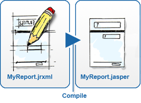
Jasper report folder and font
| 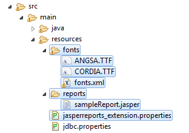 |
|
Configuration File
jasperreports_extension.properties
net.sf.jasperreports.extension.registry.factory.simple.font.families
=net.sf.jasperreports.engine.fonts.SimpleFontExtensionsRegistryFactory
net.sf.jasperreports.extension.simple.font.families.angsana=fonts/fonts.xml
font.xml
<?xml version="1.0" encoding="UTF-8"?>
<fontFamilies>
<fontFamily name="Angsana CRS">
<normal>fonts/ANGSA.TTF </normal>
<italic>fonts/ANGSA.TTF </italic>
<pdfEncoding>Identity-H </pdfEncoding>
<pdfEmbedded>true </pdfEmbedded>
<exportFonts>
<export key="net.sf.jasperreports.html">Angsana CRS, 'Angsana new', AngsanaUPC </export>
<export key="net.sf.jasperreports.xhtml">Angsana CRS, 'Angsana new', AngsanaUPC </export>
</exportFonts>
</fontFamily>
</fontFamilies>
Report Controller
@Controller
public class SampleReportController {
@Autowired ProductService productService;
@Autowired private MessageSource message;
@Autowired private ApplicationContext appContext;
@RequestMapping(value = "/sampleReport/{reportType}", method = { RequestMethod.GET })
public ModelAndView sampleReport(@PathVariable String reportType, Locale locale) {
Map <String, Object> parameterMap = new HashMap <String, Object>();
/**Create Product collection and convert to JasperReport data*/
List <Product> products = productService.findAll();
JRDataSource JRdataSource = new JRBeanCollectionDataSource(products);
parameterMap.put("datasource", JRdataSource);
/**Get Resource with locale*/
ResourceBundle bundle = ResourceBundle.getBundle("messages", locale);
parameterMap.put(JRParameter.REPORT_RESOURCE_BUNDLE, bundle);
/**Set Type of report*/
parameterMap.put("format", reportType);
/**Create JasperReport View */
JasperReportsMultiFormatView view = new JasperReportsMultiFormatView();
view.setUrl("classpath:reports/sampleReport.jasper");
view.setApplicationContext(appContext);
return new ModelAndView(view, parameterMap);
}
}
Result
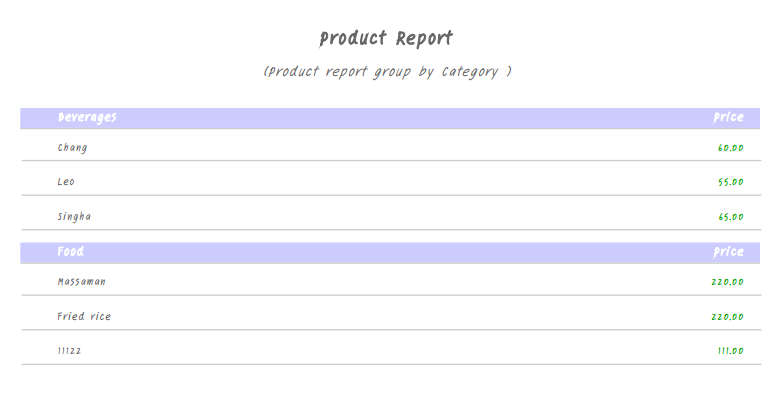Result(Thai)
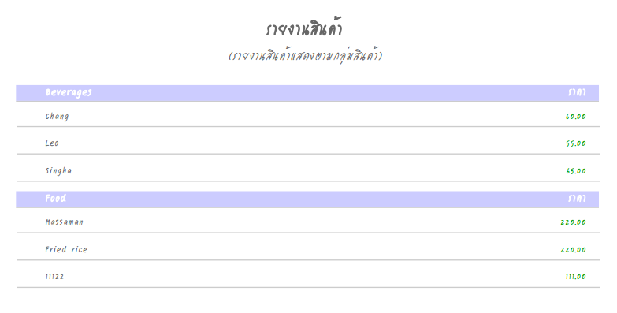Report Controller 2
@Controller
public class SampleReportController {
@Autowired private MessageSource message;
@Autowired private ApplicationContext appContext;
@Autowired private DataSource dataSource;
@RequestMapping(value = "/sampleReport/{reportType}", method = { RequestMethod.GET })
public ModelAndView sampleReport(@PathVariable String reportType, Locale locale) {
Map <String, Object> parameterMap = new HashMap <String, Object>();
/**Get Resource with locale*/
ResourceBundle bundle = ResourceBundle.getBundle("messages", locale);
parameterMap.put(JRParameter.REPORT_RESOURCE_BUNDLE, bundle);
/**Set Type of report*/
parameterMap.put("format", reportType);
/**Create JasperReport View */
JasperReportsMultiFormatView view = new JasperReportsMultiFormatView();
view.setJdbcDataSource(dataSource);
view.setUrl("classpath:reports/subReport.jasper");
view.setApplicationContext(appContext);
return new ModelAndView(view, parameterMap);
}
}
Result

Exercise
- Make Web Application to support Report
- Display Report in Thai and English
- Create Report with Sub report